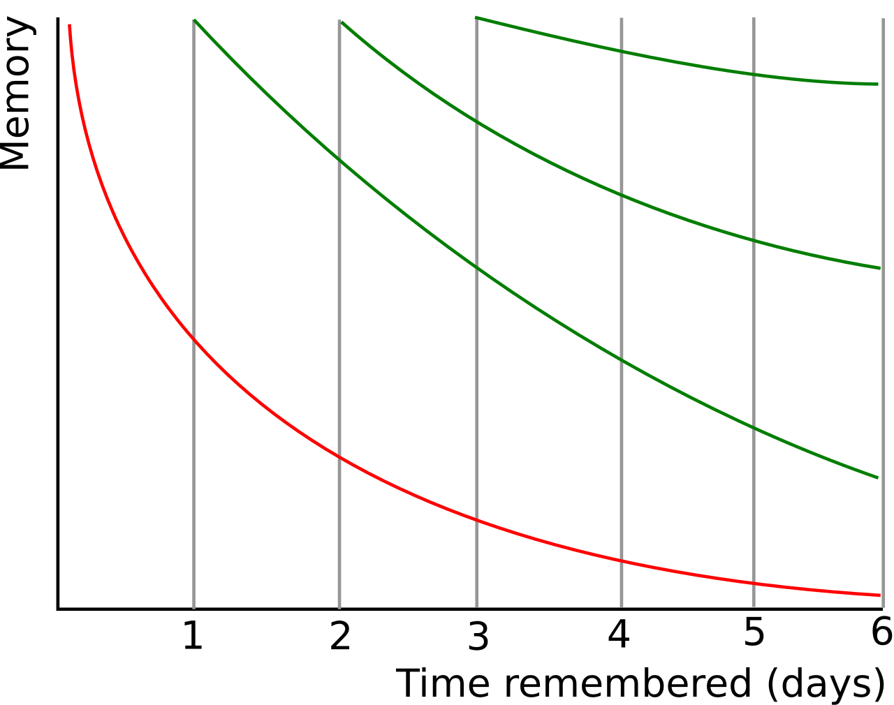
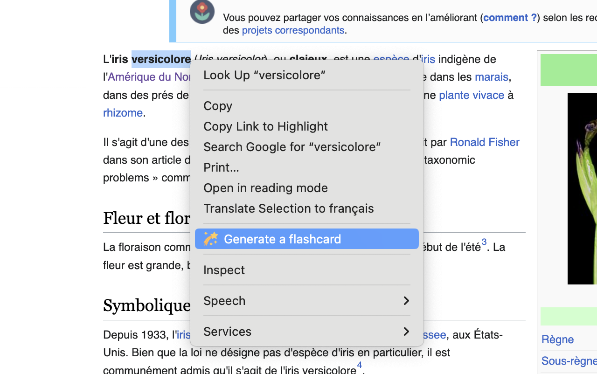
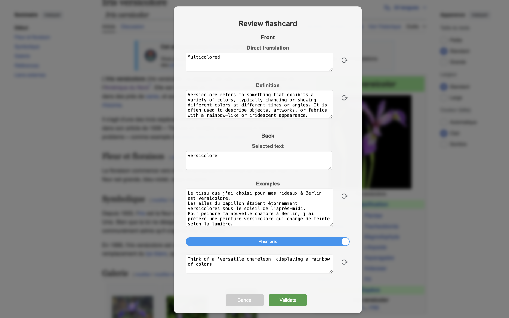
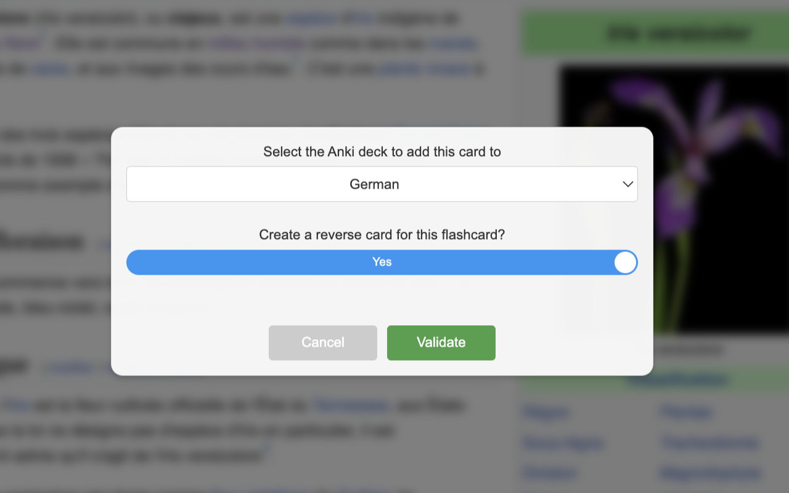

🚀 Master a New Language in Months, Not Years: Use AnkiLingoFlash to Quickly Build a Strong Vocabulary Foundation
📚 Table of Contents
- Introduction: The Benefits of Language Learning
- The Importance and Challenge of Vocabulary Acquisition
- The Secret Sauce: Spaced Repetition and AI-generated Flashcards
🌍 Introduction: The Benefits of Language Learning
Learning a new language is more than just a hobby—it’s a gateway to countless opportunities. It can significantly boost your career prospects, allowing you to communicate with a global audience and access international job markets. Beyond professional benefits, it enriches your personal life, enabling deeper connections with people from diverse cultures and broadening your worldview.
🎯 The Importance and Challenge of Vocabulary Acquisition
💡 The Importance of Vocabulary Acquisition
While language learning encompasses various aspects such as grammar, pronunciation, and cultural understanding, vocabulary forms the bedrock of communication. Without words, even the most perfect grammar is rendered useless. Research shows that mastering 3,000-5,000 word families allows you to understand 95% of most ordinary texts, while approximately 8,000 word families may be needed to reach 98% comprehension1. This insight allows us to focus our efforts efficiently on acquiring essential vocabulary.
🚣 The Challenge of Vocabulary Acquisition
Despite the clear importance of vocabulary, acquiring it effectively remains a significant challenge. Traditional approaches often adopt a one-size-fits-all strategy, failing to address the unique needs, interests, and learning paces of individual learners.
Personalisation is crucial yet often overlooked. While a doctor may need to prioritise medical terminology, a tour guide requires travel-related vocabulary. Standard learning materials rarely account for these specific needs, resulting in inefficient learning and diminished motivation.
Furthermore, most conventional learning methods neglect to harness powerful cognitive techniques that can dramatically accelerate vocabulary acquisition and retention. Memory-enhancing strategies should not be the exclusive domain of neuromarketing experts; language learning approaches can and should incorporate these hacks to help new words truly stick in learners’ minds.
These challenges call for an innovative approach to vocabulary learning - one that personalises content, adapts to individual learning speeds, and leverages effective memory techniques. The solution lies in combining time-tested learning principles with modern technology, as we’ll explore in the following sections.
🍯 The Secret Sauce: Spaced Repetition and AI-generated Flashcards
📈 Understanding the Review Process
The review process plays a critical role in consolidating knowledge in long-term memory. The more we review a piece of information, the more deeply it becomes ingrained in our memory.

With each review session, the retention period for the memorised information is extended. Source: Wikipedia
{kind=link}
Consequently, for optimal learning — in terms of efficient use of time — it is essential that the repetitions are increasingly spaced out over time.
However, it is important to note that the interval between reviews can vary from person to person and from concept to concept. Factors such as the complexity of the material and individual performance during reviews play a significant role in this variation. This is where Anki steps in with an algorithmic, adaptive approach.
🖥️ Anki: A Flashcard Programme that Leverages Spaced Repetition
Anki is a powerful tool that leverages the theory of spaced repetition to optimise our learning. At its core, Anki uses flashcards - simple yet effective learning tools with a question on one side and the answer on the other.
What sets Anki apart is its sophisticated approach to scheduling these flashcards. Using advanced algorithms, Anki calculates the optimal date for reviewing each card based on your past performance. When you answer a card correctly, Anki extends the interval before your next review of that card. Conversely, if you make a mistake, the application shortens the interval. Over time, this methodology leads to increasingly spaced reviews for each memorised item, promoting efficient and lasting knowledge consolidation. Through Anki, you can thus focus on the elements that need the most attention, making your learning not only more effective but also more targeted.
🤖 AnkiLingoFlash: A Tool to Automate the Flashcard Creation Process
Nevertheless, creating these flashcards manually can be a time-consuming and often tedious process.
This is where AnkiLingoFlash steps in to facilitate your learning process. As a browser extension, it seamlessly integrates with your web browsing experience. Simply select any word or phrase you encounter online, and AnkiLingoFlash leverages artificial intelligence to instantly generate high-quality flashcards.
🛠 AnkiLingoFlash Workflow
Here’s how AnkiLingoFlash works in practice:
🖱 Word Selection

Select text and right-click: Highlight a word or phrase, right-click, and choose the option to generate a flashcard.
📝 Card Generation

Review the flashcard: Check the AI-generated definition, direct translation and mnemonic. Request a new generation or edit manually if needed.
✅ Language Confirmation

Choose the deck: Select the Anki deck to add your new flashcard to, and you're done! Also, define the language of the selected word if the automatic detection fails.
📚 Reviewing in Anki
Review in Anki: After creating your flashcards, review them in Anki and use the pronunciation guide as many times as you need.
These aren’t just simple word-definition pairs. Each flashcard is carefully structured to optimise learning:
Front of the card (question side):
- A clear, concise definition of the term
Back of the card (answer side):
- The selected term and its direct translation in your favourite language
- An audio pronunciation guide for the term
- An AI-generated mnemonic aid for better retention
By automating the card creation process, AnkiLingoFlash allows you to focus on what truly matters—learning and retaining new vocabulary. This focus on vocabulary acquisition is crucial in language learning, as it forms the foundation for fluency and effective communication.
🏆 Rapid Progress with AnkiLingoFlash and Anki
For instance, reaching a B2 level—considered fluent for most practical purposes—typically requires knowledge of about 4,000 to 5,000 word families2. With AnkiLingoFlash, you can achieve this milestone in less than 9 months, dedicating just 20 minutes a day to learning 15 new words and reviewing existing ones. This focused approach helps you build a strong foundation rapidly, setting the stage for confident communication in your target language.
It transforms your everyday browsing into an effortless language learning opportunity, making the journey to fluency not just faster, but also more enjoyable and integrated into your daily life.
For more information about supported languages and pricing, please refer to the Supported Languages and Pricing sections on the home page. For installation instructions, please refer to the Installation guide.
-
Laufer, B., & Ravenhorst-Kalovski, G. (2010). “Lexical threshold revisited: Lexical text coverage, learners’ vocabulary size and reading comprehension.” Reading in a Foreign Language, 22(1), 15-30. ↩
-
Milton, J., & Alexiou, T. (2009). “Vocabulary size and the common European framework of reference for languages.” In B. Richards, H. M. Daller, D. D. Malvern, P. Meara, J. Milton, & J. Treffers-Daller (Eds.), Vocabulary studies in first and second language acquisition (pp. 194–211). Palgrave Macmillan. ↩